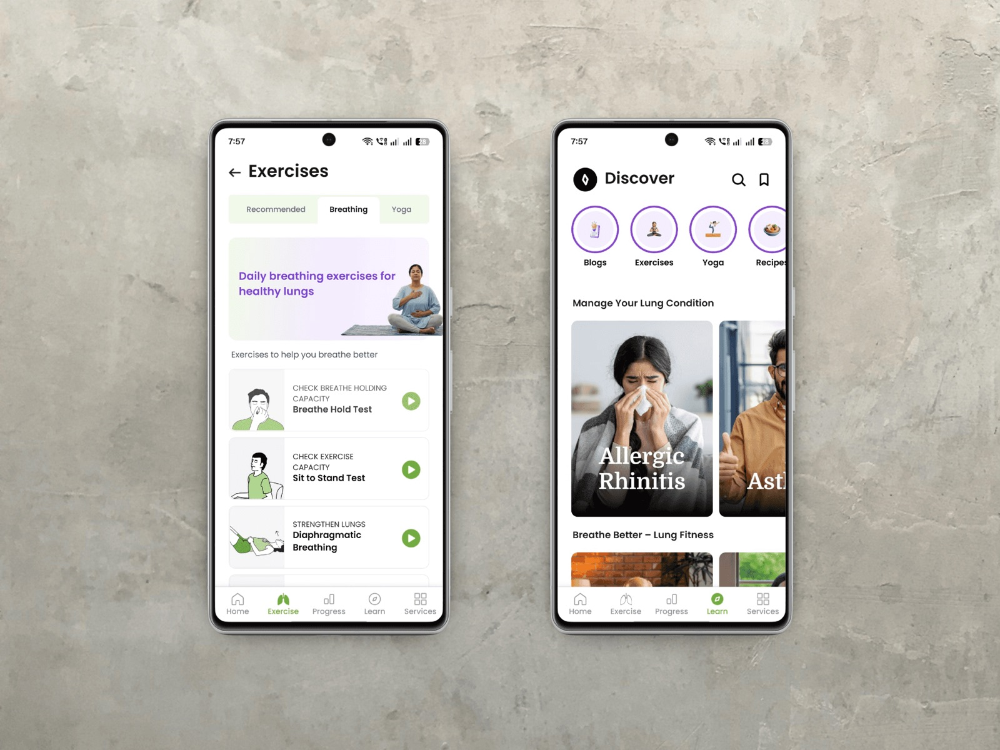
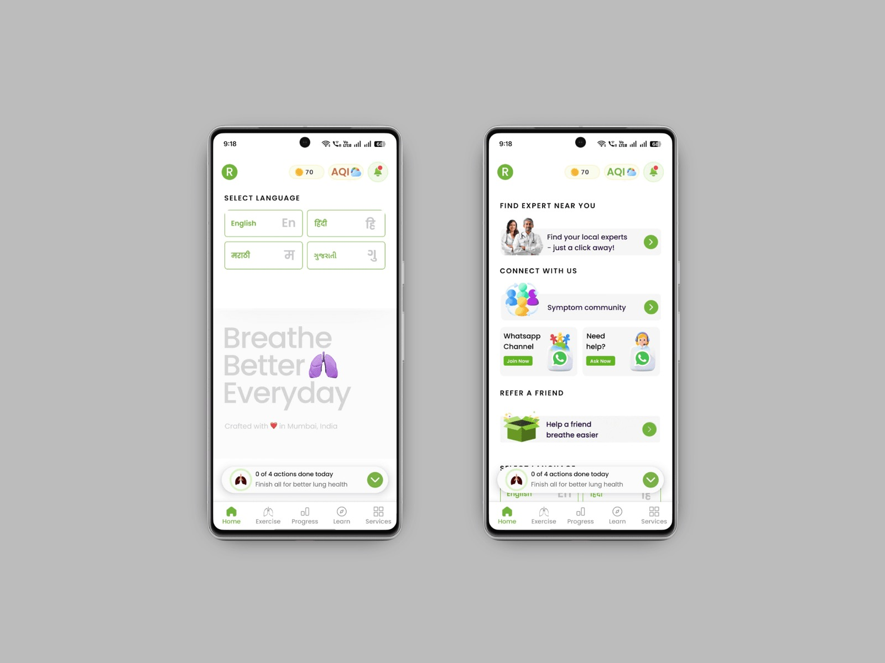

02 — UI/UX Design · Healthcare · Mobile
Cipla Breathefree
The CipAir® app turns a smartphone into a non-invasive acoustic spirometry tool that helps screen for asthma and COPD. In real-world use, patients abandoned the breath test at an alarming 42.6% rate — and the root cause was ergonomic, not technical.
Explore the full story (PDF)
Turning a failed breath test into a trusted diagnostic moment.
The challenge
The CipAir® breath analysis experience had a 42.6% test failure and abandonment rate, because the required 15–20 cm device positioning forces severe visual strain when monitoring an on-screen spinner — causing posture breakdown and incorrect audio capture.
Patients were being asked to hold the phone away from their face while simultaneously fixating on a spinner to pace their exhalation: an impossible combination of physical effort and near-field focus.
Research & discovery
The focal trap
Holding a phone 15–20 cm from the face sits inside most adults’ near-point convergence limit. Forced to track an on-screen spinner at that distance, patients strained their eyes, then compensated in one of two damaging ways: pulling the phone closer than 10 cm (clipping the microphone), or tilting it downward (changing the exhalation trajectory relative to the mic).
Sound masking & silent failure
In home environments, ambient noise — fans, television — frequently corrupted the recording. Because the UI offered no feedback beyond a spinning wheel during capture, patients assumed the app had simply frozen.
This project followed my standard eight-phase practice, sized to the engagement. See the full process
- Scoping & Prioritization
- User Research & Immersion
- Synthesis & Problem Framing
- Divergent Concepting
- Interaction Design & Prototype
- Validate — Testing
- Build & Design QA
- Measure & Iterate

The design decision
We replaced the visual-dominant interface with a multimodal, audio-guided exhalation flow, closing the loop with a post-test acoustic-quality confirmation modal.
Pacing moves from the eyes to the ears, so the phone can sit where the microphone needs it rather than where the eyes can reach it. And the silent-failure problem disappears: instead of a spinner that says nothing, the patient is told whether the recording was actually usable.
Validation
Eighteen participants across two cohorts — 8 younger digital-native users aged 18–35 and 10 elderly, less tech-savvy patients aged 55–75 — completed moderated sessions on high-fidelity interactive prototypes with real-time acoustic feedback triggers.
The transition from the old visual design to the new audio-and-modal design yielded significant improvements across every key usability metric.
Explore the full storyImpact
CipAir®
91.6%
Task completion
from 57.4%
8.4%
Test abandonment
from 42.6%
42s
Average task time
from 184s
4.8/5
User confidence score
from 2.3/5
88.5
SUS score — best in class
from 52.5 (poor)
18
Participants across two cohorts
8 aged 18–35 · 10 aged 55–75
Next project
Fujifilm Instax

Have a product that needs a better experience?
Let’s work together
Whether you’re building a new product, improving an existing experience, or solving a complex UX problem — I’d love to hear about it.
Available for selected opportunities